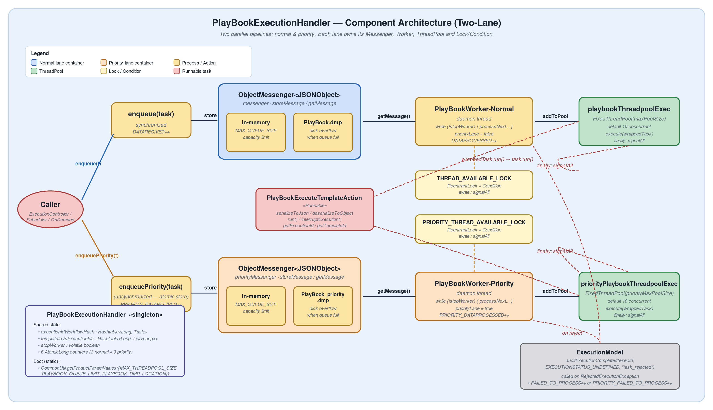
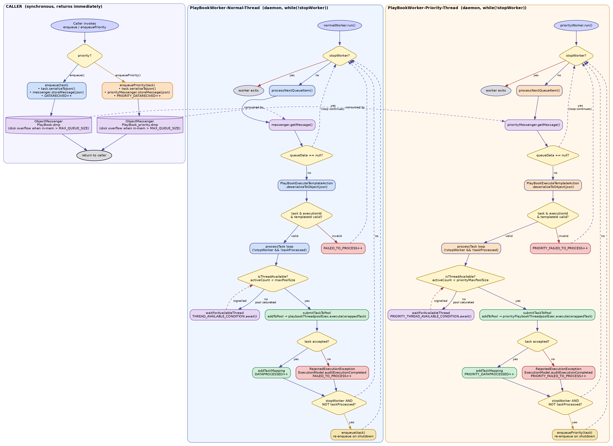

PlayBookExecution Handler
This is the execution pipeline after the priority-lane refactor. The handler remains a singleton,
but it now owns two parallel lanes — normal and priority — each with its own
ObjectMessenger, daemon worker thread, and fixed-size thread pool
(default = 10 threads per lane, so up to 20 playbooks can run concurrently across both lanes).
Manually-triggered playbooks land in the normal lane via enqueue();
priority-tagged executions land in the priority lane via enqueuePriority() and are
processed by an entirely separate pipeline so they cannot be starved by normal traffic.
Key Fields
messenger / priorityMessengerTwo
ObjectMessenger<JSONObject> instances backed by an in-memory queue plus a disk overflow file (PlayBook.dmp and PlayBook_priority.dmp) once MAX_QUEUE_SIZE is exceeded.playbookThreadpoolExec / priorityPlaybookThreadpoolExecTwo
ThreadPoolExecutors (FixedThreadPool), independent budgets per lane.DATARECIVED / PRIORITY_DATARECIVEDAtomicLong; incremented on every enqueue / enqueuePriority call.DATAPROCESSED / PRIORITY_DATAPROCESSEDAtomicLong; incremented after each task is successfully submitted to its lane's pool.FAILED_TO_PROCESS / PRIORITY_FAILED_TO_PROCESSAtomicLong; incremented on invalid queue data or RejectedExecutionException.executionIdWorkflowHash & templateIdVsExecutionIdsShared
Hashtable bookkeeping for interruptTask / isTemplateExecuting — both lanes write into them.stopWorkervolatile boolean; set by shutdown(), polled by both worker loops to exit.Thread Pool — Default = 10 Per Lane
- Each lane gets its own
FixedThreadPoolsized byMAX_THREADPOOL_SIZE(defaults to 10).priorityMaxPoolSize = maxPoolSize, so both lanes have identical capacity. - Each thread executes one
PlayBookExecuteTemplateAction.run()at a time. - When all threads in a lane are busy, the lane's worker calls
laneCondition.await()on that lane's lock. New incoming tasks accumulate in the lane'sObjectMessenger(and overflow to disk if needed) until a slot frees up. - On task completion the wrapping
Runnable'sfinallyblock callssignalAllon the lane condition, waking the suspended worker so it can submit the next task. - The two lanes share no thread budget — priority work cannot be blocked or delayed by normal-lane load, and vice-versa.
- On
shutdown()any task the worker could not submit is re-enqueued into its own lane (priority lane viaenqueuePriority, normal lane viaenqueue) so nothing is lost.
Component Architecture
Click the diagram to zoom in / out and pan.

Workflow — Caller & Worker
